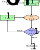

Flusskontrolle#
Schaltjahr#
Um zu ermitteln, ob ein Jahr ein Schaltjahr ist, gibt es 3 Regelungen.
Ein Jahr ist ein Schaltjahr, wenn die Jahreszahl restlos durch 4 teilbar ist.
Ein Jahr ist kein Schaltjahr, wenn es durch 4 und 100 restlos teilbar ist.
Ein Jahr ist ein Schaltjahr, wenn es sowohl durch 4, durch 100 und durch 400 teilbar ist.
Aufgabenteil A#
Erstellen Sie ein Flussdiagramm, das j als Jahreszahl entgegen nimmt und als Rückgabe entweder True oder False ausgibt, je nach dem ob es sich um ein Schaltjahr handelt oder nicht
Lösung#
Aufgabenteil B#
Handelt es sich bei den Jahren 1800, 1996, 1997, 2000, 2016 um ein Schaltjahr?
Lösung#
Jahr |
Ist Schaltjahr |
|---|---|
1800 |
|
1996 |
|
1997 |
|
2000 |
|
2016 |
|
Aufgabenteil C#
Überfuhren sie das Flussdiagramm in ein Python Programm
Lösung#
Show code cell content
def ist_schaltjahr(jahr):
if jahr % 4 == 0:
if jahr % 100 == 0:
if jahr % 400 == 0:
return True
else:
return False
else:
return True
else:
return False
Augabenteil D#
Wie viele Tage ein Monat hat, hängt immer vom jeweiligen Monat selbst ab und im Falle vom Februar auch vom Jahr. Schreiben Sie eine weitere Funktion, die tag, monat und jahr entgegen nimmt und anschließend True oder False zurück gibt, je nach dem ob es sich um ein valides Datum handelt. Benutzen Sie dazu die zuvor geschriebene Methode.
Lösung#
Show code cell content
def datum_valide(tag, monat, jahr):
if tag < 1 or monat < 1 or monat > 12:
return False
if monat == 2:
if ist_schaltjahr(jahr):
if tag > 29:
return False
else:
if tag > 28:
return False
elif monat in [4, 6, 9, 11]:
if tag > 30:
return False
else:
if tag > 31:
return False
return True
Wechselgeld#
Schreiben Sie eine Funktion, die einen Preis und einen bezahlten Geldbetrag entgegen nimmt, das zurückzuzahlende Wechselgeld berechnet und ausgibt, welche Scheine und Münzen zurück gegeben werden müssen, sodass die Anzahl der zurückgegebenen Scheine und Münzen minimal ist. Rechnen Sie mit Integern und ignorieren Sie Centbeträge.
Lösung#
Show code cell content
def berechne_wechselgeld(preis, bezahlt):
wechselgeld = bezahlt - preis
for banknote in [200, 100, 50, 20, 10, 5, 2, 1]:
print(f'{banknote:3d}€:', wechselgeld // banknote)
wechselgeld = wechselgeld % banknote
berechne_wechselgeld(127, 200)
200€: 0
100€: 0
50€: 1
20€: 1
10€: 0
5€: 0
2€: 1
1€: 1
Einstellige Quersumme#
Schreiben Sie eine Funktion, die die einstellige Quersumme für eine übergebene natürliche Zahl berechnet. Um die einstellige Quersumme zu berechnen, bilden sie so lange die Quersumme der Quersumme der Quersumme etc. einer Zahl, bis das Ergebnis zwischen 1 und 9 liegt.
Lösung#
Show code cell source
def zaehl_ziffern(zahl):
'''Berechnet die Anzahl der Ziffern des übergebenen Integers'''
ziffern_anzahl = 0
while zahl // 10 != 0:
zahl //= 10
ziffern_anzahl += 1
return ziffern_anzahl
def quersumme(zahl):
quersumme = 0
ziffern_anzahl = zaehl_ziffern(zahl)
for dezimalstelle in range(ziffern_anzahl, -1, -1):
quersumme += zahl // (10**dezimalstelle)
zahl %= 10**dezimalstelle
return quersumme
def einstellige_quersumme(zahl):
einst_quersumme = zahl
while einst_quersumme > 9:
einst_quersumme = quersumme(einst_quersumme)
return einst_quersumme
# manche Probleme können auch rekursiv gelöst werden, was bedeutet, dass die ausführende Funktion sich selbst aufruft:
def einstellige_quersumme_rekursiv(zahl):
einst_quersumme = quersumme(zahl)
if einst_quersumme > 9:
einst_quersumme = einstellige_quersumme_rekursiv(einst_quersumme)
return einst_quersumme
Pythagoras#
Schreiben Sie ein Programm, dass alle Integer Triplets \(a, b, c\) zwichen 1 und einer beliebigen Grenze findet, die die Gleichung
erfüllen. Was ist die Komplexität des Algorithmus? Spielen Sie ein bisschen mit der Grenze und achten Sie auf die Laufzeit ihres Programms um ein Gefühl dafür zu bekommen, was Komplexität bedeutet.
Lösung#
Show code cell content
def ist_pythagoreisches_trippel(a, b, c):
if a**2+b**2 == c**2:
return True
return False
grenze = 11
for a in range(1, grenze):
for b in range(1, grenze):
for c in range(1, grenze):
if ist_pythagoreisches_trippel(a, b, c):
print(f'{a}² + {b}² = {c}²')
3² + 4² = 5²
4² + 3² = 5²
6² + 8² = 10²
8² + 6² = 10²
Die Komplexität des obigen Algorithmus ist \(n^3\).
Spannungs-Dehnungs-Diagramm#
Führt man mit Stahl einen Strecktest durch so erhält man folgendes idealisiertes Diagramm:
Dabei sind volgende Stellen von Bedeutung:
Obere Streckgrenze
Untere Streckgrenze
Einschnürungspunkt
Bruch
Für die folgende Aufgabe soll nur von idealisierten Werten ausgegangen werden.
Aufgabenteil A#
Erstellen Sie ein Flussdiagramm das sigma = σ [ 𝑁/𝑚𝑚2 ] als Liste entgegen nimmt und anhand dieser die Spannung der oberen Steckgrenze ermittelt und ausgibt.
Lösung#

Aufgabenteil B#
Überführen Sie das Flussdiagramm in ein Python Programm.
Lösung#
Show code cell content
def obere_streckgrenze(sigma):
s1 = sigma[0]
for s in sigma:
if s < s1:
return s1
else:
s1 = s
Aufgabenteil C#
Erstellen Sie ein Flussdiagramm das sigma = σ [ \(N/mm^2\) ] als Liste entgegen nimmt und anhand dieser alle relevanten Spannungen ausgibt.
Lösung#
Aufgabenteil D#
Überführen Sie das neue Flussdiagramm in ein Python Programm.
Lösung#
Show code cell content
def relevante_werte(sigma):
n = len(sigma)
s1 = sigma[0]
i = 1
while i < n:
s2 = sigma[i]
i += 1
if s2 < s1:
break
else:
s1 = s2
while i < n:
s3 = sigma[i]
i += 1
if s3 > s2:
break
else:
s2 = s3
while i < n:
s4 = sigma[i]
i += 1
if s4 < s3:
s4 = sigma[-1]
return s1, s2, s3, s4
else:
s3 = s4
Wurzel ziehen#
Viele Algorithmen wirken auf dem ersten Blick sehr kompliziert und überwältigend. Doch bricht man sie in ihre Einzelteile auf, so erscheinen sie einem nicht mehr so schwer.
Der in dieser Aufgabe beschriebene Algorithmus kann aus allen N\(\space \in \mathbb{N}_{+}\{/0\}\) die Wurzel ziehen. In den folgenden Aufgaben soll dieser implementiert werden. Das Flussdiagramm sieht wie folgt aus:

Eine genauere Erklärung dieses Verfahrens ist in diesem Video zu finden.
Aufgabenteil A#
Führen Sie die Funktion Wurzel händisch für die Zahl N = 121 und N = 71289 durch und schreiben Sie die Werte für P, q und r der Hauptfunktion auf.
Lösung#
Für 121:
\(P = [1, 21]\)
\(p = 1\)
\(q = 1\)
\(r = 1 - 1² = 0\)
\(p = 21\)
\(r = 0 \cdot 100 + 21 = 21\)
\(\space \space \space \space v = 1 \cdot 20 = 20\)
\(\space \space \space \space n = 21 // 20 = 1\)
\(\space \space \space \space 1 \cdot (20 + 1) = 21 \le 21\)
\(r = 21 - 21 = 0\)
\(q = 1 \cdot 10 + 1 = 11\)
Für 71289:
\(P = [7, 12, 89]\)
\(p = 7\)
\(q = 2\)
\(r = 7 - 2² = 3\)
\(p = 12\)
\(r = 3 \cdot 100 + 12 = 312\)
\(\space \space \space \space v = 2 \cdot 20 = 40\)
\(\space \space \space \space n = 312 // 40 = 7\)
\(\space \space \space \space 7 \cdot (40 + 7) = 329 > 312\)
\(\space \space \space \space n = 7 - 1 = 6\)
\(\space \space \space \space 6 \cdot (40 + 6) = 276 \le 312\)
\(r = 312 - 276 = 36\)
\(q = 2 \cdot 10 + 6 = 26\)
\(p = 89\)
\(r = 36 \cdot 100 + 89 = 3689\)
\(\space \space \space \space v = 26 \cdot 20 = 520\)
\(\space \space \space \space n = 3689 // 520 = 7\)
\(\space \space \space \space 7 \cdot (520 + 7) = 3689 \le 3689\)
\(r = 3689 - 3689 = 0\)
\(q = 26 \cdot 10 + 7 = 267\)
Aufgabenteil B#
Implementieren Sie die Funktion Päckchen und berechnen Sie mit dieser Funktion die Werte 20, 120, 1203 und 12035. Beschreiben Sie, was diese Funktion macht.
Lösung#
Show code cell content
def paeckchen(N):
P = []
n = N
while n > 0:
p = n % 100
P.append(p)
n = n // 100
P.reverse()
return P
print(paeckchen(20))
print(paeckchen(120))
print(paeckchen(1203))
print(paeckchen(12035))
[20]
[1, 20]
[12, 3]
[1, 20, 35]
Aufgabenteil C#
Implementieren Sie die Funktion Quadrat und berechnen Sie mit dieser Funktion die Werte 99, 30, 36 und 17. Beschreiben Sie, was diese Funktion macht.
Lösung#
Show code cell content
def quadrat(p):
for v in [9,8,7,6,5,4,3,2,1,0]:
if v ** 2 <= p:
return v
print(quadrat(99))
print(quadrat(30))
print(quadrat(36))
print(quadrat(17))
9
5
6
4
Aufgabenteil D#
Implementieren Sie die Funktion Rest und berechnen Sie mit dieser Funktion die Werte (128, 4), (128, 2), (1289, 17) und (61289, 425). Beschreiben Sie, was diese Funktion macht.
Lösung#
Show code cell content
def rest(r, q):
v = q * 20
n = r // v
while r < n * (v + n):
n -= 1
return r - n * (v + n), n
print(rest(128, 4))
print(rest(128, 2))
print(rest(1289, 17))
print(rest(61289, 425))
(47, 1)
(44, 2)
(260, 3)
(1740, 7)
Aufgabenteil E#
Implementieren Sie die Funktion Wurzel und berechnen Sie mit dieser Funktion die Werte 17, 476, 1097 und 6027341. Beschreiben Sie, was diese Funktion macht. Vergleichen Sie die errechneten Werte mit denen von einem Taschenrechner.
Lösung#
Show code cell content
def Wurzel(N):
P = paeckchen(N)
p = P[0]
q = quadrat(p)
r = p - q**2
i = 1
l = len(P)
while (r > 0 or i < l) and i < l + 100:
if i < l:
p = P[i]
r = r * 100 + p
else:
r = r * 100
r, n = rest(r, q)
q = q * 10 + n
i += 1
q = q / (10 ** (i - l))
return q
print(Wurzel(17))
print(Wurzel(476))
print(Wurzel(1097))
print(Wurzel(6027341))
4.123105625617661
21.817424229271428
33.12099032335839
2455.064357608574